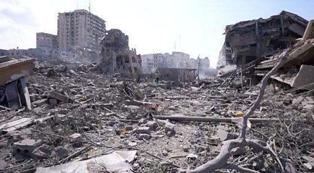
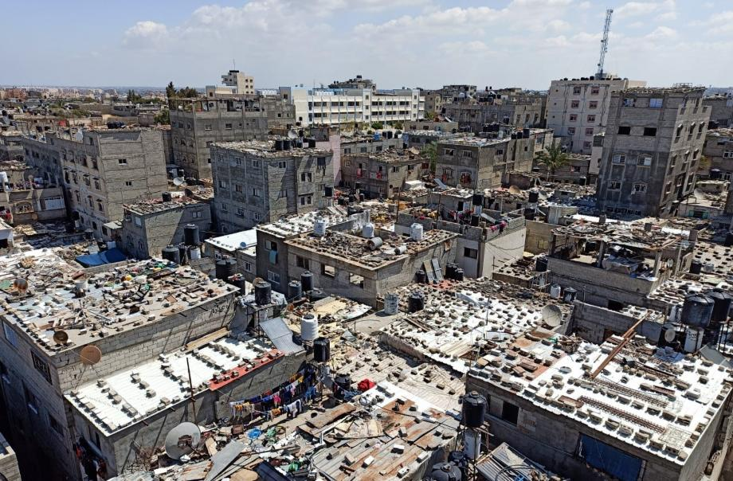
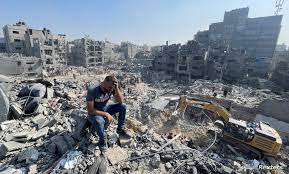

:شمال غزة

حوّل الهجوم العسكري الإسرائيلي معظم الشطر الشمالي من قطاع غزة إلى "مدينة أشباح" وربما لن يكون صالحا للسكن، حيث تم محو أحياء بأكملها، وتعرضت منازل ومدارس ومشافي للقصف الجوي، واحترق بعضها بنيران الدبابات، ولا تزال بعض المباني قائمة، لكن معظمها عبارة عن هياكل متضررة.
وفرّ ما يقرب من مليون فلسطيني من شمال غزة، بما فيه المركز الحضري للمنطقة، مدينة غزة، مع اشتداد القتال البري.
وأدى استخدام الجيش الإسرائيلي للمتفجرات القوية في المناطق السكنية المكتظة، والذي تصفه إسرائيل بأنه النتيجة الحتمية لاستخدام حركة حماس للمواقع المدنية كغطاء لعملياتها، إلى مقتل أكثر من 14000 فلسطيني وإلى دمار مروع.
:دير البلح

احتدمت المعارك البرية بين المقاومة الفلسطينية وقوات الاحتلال الإسرائيلي المتوغلة في مناطق متفرقة من قطاع غزة في ظل قصف إسرائيلي وحشي متواصل دخل يومه الـ 78 على القطاع المحاصر، وسط تدهور كبير في الأوضاع الإنسانية مع استمرار العدوان بالتزامن مع اعتماد مجلس الأمن الدولي مشروع قرار يهدف إلى توسيع إدخال المساعدات الإنسانية دون الدعوة إلى وقف إطلاق النار.
وواصلت طائرات الاحتلال ومدفعيته اليوم السبت قصف مناطق في عموم قطاع غزة، مستهدفة المنازل والتجمعات السكنية والمنشآت التي تؤوي النازحين، بالإضافة إلى الشوارع والبنى التحتية.

تُظهر هذه اللقطات الجوية المصورة حجم الدمار الذي شهدته مدينة خان يونس في قطاع غزة حيث تغطي شوارع المدينة أكوام كبيرة من أنقاض المباني المنهارة. بعد نحو سبعة أسابيع من القصف الإسرائيلي المتواصل للأراضي الفلسطينية رداً على هجمات حماس في 7 تشرين الأول/ أكتوبر.
عاد آلاف النازحين من غزة إلى منازلهم يوم الجمعة مع بدء الهدنة التي تستمر أربعة أيام بين إسرائيل وحماس.
وحل محل ضجيج الحرب أبواق الاختناقات المرورية وصفارات سيارات الإسعاف التي تشق طريقها بين الحشود الخارجة من المستشفيات والمدارس التي لجأت إليها.

قُتل 12 شخصا على الأقل وأصيب العشرات في سلسلة غارات جوية إسرائيلية على مدينة رفح في جنوب قطاع غزة قرب الحدود مع مصر، وفق ما نقلت «وكالة الصحافة الفرنسية» عن وزارة الصحة في قطاع غزة.
وأفاد مراسلو «وكالة الصحافة الفرنسية» وشهود عيان في المدينة عن وقوع أكثر من عشر غارات جوية متتالية أصابت منازل عدة.
وأعلنت وزارة الصحة «انتشال 12 شهيدا وعشرات المصابين بينهم أطفال ونساء من تحت الأنقاض باستهداف منزل ومسجد على بعد مئات الأمتار من مستشفى الكويت».